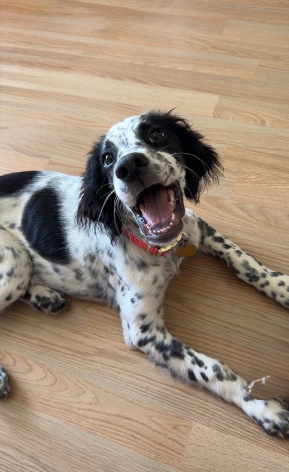
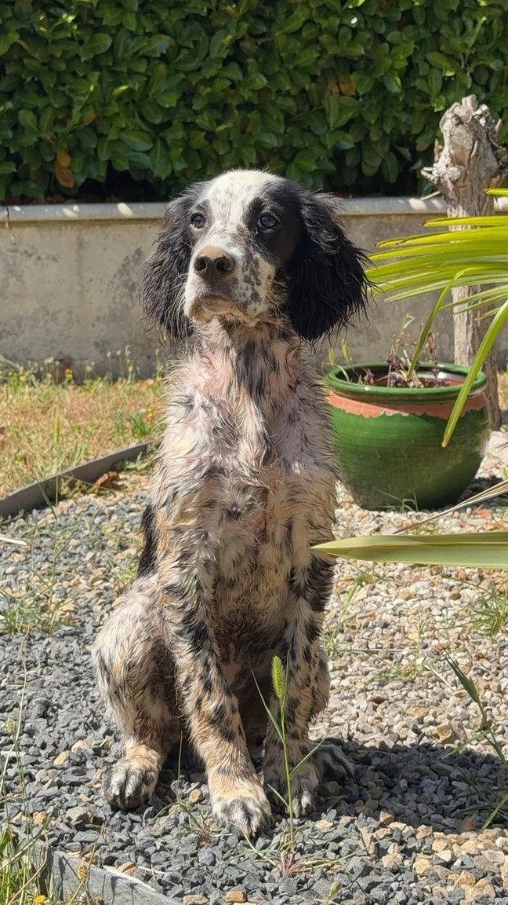

Baïa
Projet personnel & identité visuelle.
+550 abonnés en 3 mois
Un compte créé autour de mon chien, Baïa, comme terrain d’expérimentation créative personnel.
Développé en autonomie pour explorer les formats courts, le storytelling, le rythme, la spontanéité et la cohérence visuelle.
Organic growth · Creative autonomy · Visual consistency


